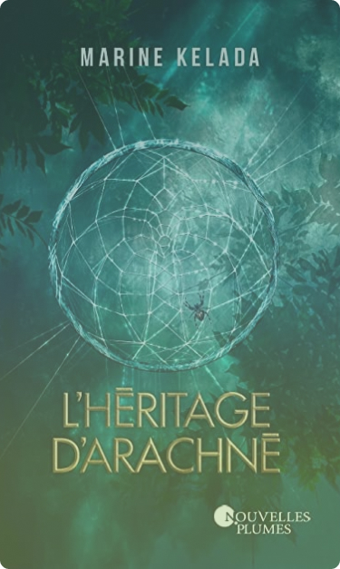

En savoir plus
Qu'est ce que la lecture nous apporte ?
J’ai décidé de vous présenter un livre qui me tient énormément à cœur
car je l’ai lue pendant le premier confinement et c’est grâce à ce livre
que je me suis mise à lire des romans de plus en plus.
Avant de le lire je ne pensais pas que la lecture pouvait
apporter autant à une personne. Ce livre m’a fait ressentir tant d’émotions,
j’ai pris beaucoup de plaisir à le lire à tel point que je ne voulais pas
finir le livre et pouvoir continuer à le lire encore et encore mais enfin
de compte je ne le regrette pas au contraire.
J’ai ris, pleuré, été en colère ou encore choqué lors de ma lecture.
J’espère que là moi du finir continue de lire et à réussi à avoir
ce qu’elle souhaitait le plus, une belle et grande bibliothèque ou
elle pourrait lire et relire les livres qu’elle aime.
Présentation du livre
Ce livre dont je vous parle se nomme “L’héritage d’Arachnée” de Marine Kellada .
Il s’agit d’un roman de fantasy avec une histoire d’amour,
des retournements de situation et une intrigue très poussée.
L’histoire tourne autour d’une jeune femme qui va rencontrer un homme fort
mystérieux grâce à son père mais cette rencontre va engendrer quelque
changement dans la vie de la jeune femme qui se retrouve lié à cet homme.
“Arachos, j’ai promis que je ne t’abandonnerais plus tu te souviens ? “
Ce qu'il faut retenir
Je trouve que la lecture permet de se couper du monde réel et
de s’enfermer dans sa bulle, c’est un moment de détachement
de la réalité. La littérature nous console e nous rassure grâce
à ces histoires tout genre. Pour moi c’est vraiment comme si je
changé d’univers quand je lis et cela me fais du bien quand je
stresse ou quand je doute.
Même si vous n’êtes pas lecteur je vous conseille d’essayer
si vous souhaité éprouver des moments forts, des émotions
ou fuir la réalité qui est la vôtre.
Extrait
“L’être humain est stupide. Il ne réalise vraiment l’importance de l’autre que lorsqu’il le perd,
alors que le trou béant que laisse l’absence est déjà là, profond et irréparable.
On vit comme il y avait toujours un lendemain pour tout le monde, mais c’est faux.
Hier - c’est tout comme - maman me serrait dans ses bras et je lui confiais mes chagrins d’amour ;
aujourd'hui elle n’était plus. Aujourd'hui il ne me restait plus que mon père, ma seule et unique famille ;
demain il pourrait avoir disparu, comme maman... La mort pourrait l’emporter... ou moi.”
“Je tentais de dédramatiser la situation afin de ne pas céder à l'angoisse :
Arachos était un véritable objet scientifique, le mystère du siècle, la mascotte des scientifiques du Clay'Lab.
Il n'était donc pas étonnant, presque logique, qu'il pût avoir des capacités "anormales" [...]
L'idée était vraiment palpitante. Sa concrétisation, terrifiante. Je levai mes yeux paniqués vers Arachos et,
quand ils l'emmenèrent, ce qui me rattachait à lui se rompit.
— Non ! Laissez-le !
À l'intérieur, mon cœur aussi commençait à se rompre. Tout doucement, sournoisement, à mon insu...”
“Je trouvai l’homme-araignée debout sur une branche d’arbre.
Dès qu’il me vit, il sauta souplement au sol et je jetai derrière moi un coup d’œil qui ne lui échappa pas.
Tu veux rester ici ? s’enquit-il en me fixant de ses yeux noirs aux reflets pourpres.
Ce… Ils sont… Ils sont comme les hommes en blanc, balbutia-t-il.
Tous les hommes ne sont pas mauvais, tu sais. Arachos, j’ai promis que je ne t’abandonnerais plus,
tu te souviens ? Alors arrête de t’en faire et ramène-moi plutôt à… au… euh… à la cabane
J’hésitai. Si je restais ici, je trouverais sûrement quelque bonne âme pour me loger,
je serais au chaud et pourrais probablement contacter Whitehorse pour qu’on vienne me chercher.
Mais… Il y avait Arachos… Il semblait déterminé à prendre soin de moi, parfois maladroitement certes,
mais ses intentions étaient nobles et je ne pouvais me résoudre à le laisser…
Il hocha la tête en esquissant un sourire en coin.”